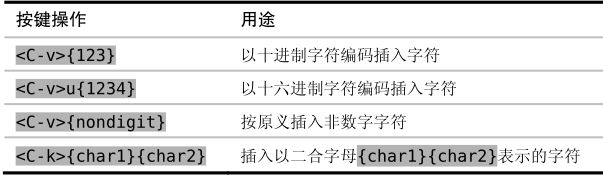

。
。技巧17用字符编码插入非常用字符
Vim可以用字符编码（Character Code）插入任意字符。使用此功能可以很方便地输入键盘上找不到的符号。
只要知道某个字符的编码，就可以让Vim插入该字符，我们可以用这种方式插入任意字符。要根据字符编码插入字符，只需在插入模式中输入<C-v>{code}即可，其中{code}是要插入字符的编码。
Vim所接受的字符编码共包含3位数字。例如，假设我们想插入大写字母“A”，它的字符编码是65，因此我们需要输入<C-v>065。
然而，如果我们想插入一个编码超过3位数的字符该怎么办？比方说，Unicode基本多文种平面（Unicode Basic Multilingual Plane）的地址空间最大会有65535个字符。解决方法是可以用4位十六进制编码来输入这些字符，即输入<C-v>u{1234}（注意数字前的u）。假设我们想插入字符编码为00bf的反转问号（“¿”），只需在插入模式中输入<C-v>u00bf即可。更多详细内容可参见:h i_CTRL-V_digit 。
如果你想知道文档中任意字符的编码，只需把光标移到它上面并按ga命令，然后屏幕下方就会显示出一条消息，分别以十进制和十六进制的形式显示出其字符编码（参见:h ga ）。当然，如果你想知道文档中不存在的字符的编码，该命令就无能为力了。在这种情况下，你或许得去查一下unicode表。
另外，如果<C-v>命令后面跟一个非数字键，它会插入这个按键本身所代表的字符。例如，如果启用了‘expandtab’选项，那么按<Tab>键将会插入空格而不是制表符。然而，按<C-v><Tab>则会一直插入制表符，不管‘expandtab’选项激活与否。
表3-1对输入非常用字符的命令进行了总结。
表3-1插入非常用字符
